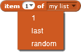

Coloca o item na posição especificada da lista
Você pode especificar qual item reportar escolhendo no menu suspenso ou digitando um número. Escolher a opção "aleatório" reporta um item aleatório apresentado na lista.

O bloco do item reporta o valor do item no lugar especificado na lista.

Você pode encaixar um bloco de item em outros blocos, por exemplo: diga, troque a fantasia, reproduza som, ou envie a todos.